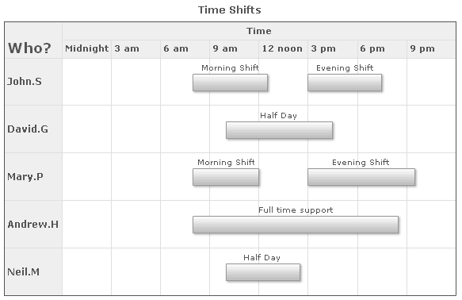
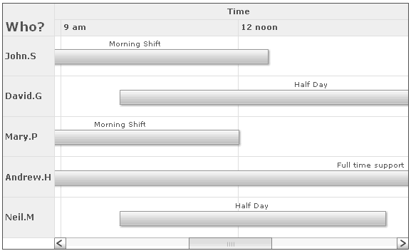
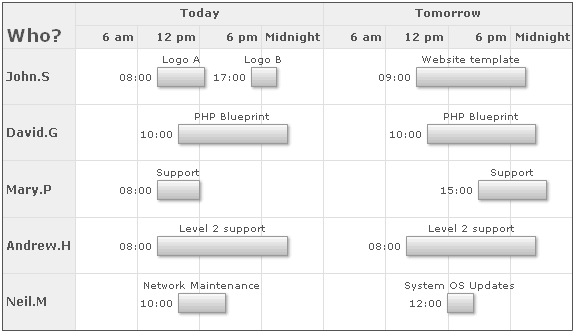

Gantt Chart > Time based tasks |
Till now, we've only seen date based charts in all our examples. However, FusionWidgets Gantt chart also supports the following chart:
Here, we'll see examples of both. But first, we'll see the XML format required for time based charts. |
| Time format required by FusionWidgets |
FusionWidgets needs you to specify the time necessarily in 24 hour format (hh:mn:ss) in your XML data document. The 24-hour clock is a convention of time-keeping in which the day runs from midnight to midnight and is divided into 24 hours, numbered from 0 to 23. A time of day is written in the 24-hour notation in the form hh:mm (for example 01:23) or hh:mm:ss (for example, 01:23:45), where hh (00 to 23) is the decimal number of full hours that have passed since midnight, mm (00 to 59) is the number of full minutes that have passed since the last full hour, and ss (00 to 59) is the number of seconds since the last full minute. In the 24-hour time notation, the day begins at midnight, 00:00, and the last minute of the day is that beginning at 23:59. So, to specify a time in FusionCharts XML, you'll have to use something as under: <category start='00:00:00' end='23:59:59' label='Day' /> In the above example, we've specified only the time. You can, however, specify both date and time, as we'll see later in this page. Let's now quickly see an example of how to plot time based gantt Charts. |
| Time based Gantt chart example: Employee Shifts |
Here, we'll be plotting a time based Gantt chart to represent the time shifts for each employee. This chart's time span is 1 day only. Within that day, we'll distribute the chart into time blocks and show each employee's work time. The final chart would look as under: |
|  |
As you can see above, each employee's work time is now represented by a bar spanning across different times. We've also defined our own time base category (visual timeline) here. The XML for this chart looks as under: |
<chart dateFormat='dd/mm/yyyy' outputDateFormat='hh12:mn ampm' caption='Time Shifts' > |
Here, we've:
If you're using only time based charts, FusionWidgets allows you to specify 23:59:59 as 24:00:00 for ease of usage. Let's now quickly modify this example to enable scrolling in Gantt pane. We'll set the scroll in such a way that the Gantt pane shows only 6 hours in a single view. To do so, we use: <chart ... ganttPaneDuration='6' ganttPaneDurationUnit='h'> This will result in: |
|  |
| Creating date+time based charts |
In this example, we'll plot time based Gantt charts that span more than a single day. We'll plot the work schedule of employees for the next 2 days. The final chart would look as under after completion: |
|  |
As you can see above, here we're spanning the task bars across 2 dates and different times in each date. To do so, we've to provide both the date and time to the chart in the following format: <category start='7/15/2007 00:00:00' end='7/15/2007 23:59:59' label='Today' /> The format is dd/mm/yyyy hh:mn:ss. You can customize dd/mm/yyyy to mm/dd/yyyy or yyyy/mm/dd using dateFormat attribute of <chart> element. But, the time always needs to be in hh:mn:ss format in 24 hour format. The entire XML for above chart can be listed as under: |
<chart dateFormat='mm/dd/yyyy' outputDateFormat='hh:mn' caption='Work Schedule' subCaption='For next 2 days'> |
Here, we've:
|